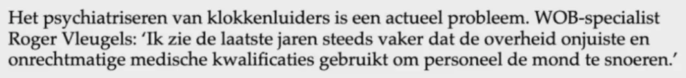
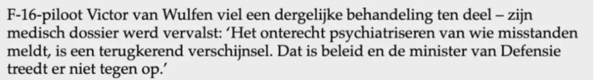

Prueba · Comunicado de prensa
Comunicado de prensa de De Blauwe Tijger, 12 de septiembre de 2017
El comunicado de prensa termina con dos voces sobre la psiquiatrización de los denunciantes. La sección de voces cita la segunda, la de Victor van Wulfen.
Roger Vleugels, especialista en la Wob
«La psiquiatrización de los denunciantes es un problema actual. Roger Vleugels, especialista en la WOB: “En los últimos años veo cada vez con más frecuencia que las autoridades utilizan calificaciones médicas incorrectas e ilícitas para silenciar al personal”». Página 1, el penúltimo párrafo del comunicado de prensa. La WOB (Wet openbaarheid van bestuur) era la ley neerlandesa de publicidad de la Administración. Las líneas de la captura de pantalla se han unido aquí. Traducido del neerlandés; el texto original figura a continuación.
“Het psychiatriseren van klokkenluiders is een actueel probleem. WOB-specialist Roger Vleugels: ‘Ik zie de laatste jaren steeds vaker dat de overheid onjuiste en onrechtmatige medische kwalificaties gebruikt om personeel de mond te snoeren.’” Texto original

Victor van Wulfen, piloto de F-16
«El piloto de F-16 Victor van Wulfen sufrió un trato semejante —su historial médico fue falsificado—: “La psiquiatrización indebida de quien denuncia irregularidades es un fenómeno recurrente. Es una política, y la ministra de Defensa no toma medidas contra ello”». Página 1, el párrafo final del comunicado de prensa. Las líneas de la captura de pantalla se han unido aquí. Traducido del neerlandés; el texto original figura a continuación.
“F-16-piloot Victor van Wulfen viel een dergelijke behandeling ten deel – zijn medisch dossier werd vervalst: ‘Het onterecht psychiatriseren van wie misstanden meldt, is een terugkerend verschijnsel. Dat is beleid en de minister van Defensie treedt er niet tegen op.’” Texto original

Por qué importa este documento
Con este comunicado de prensa del 12 de septiembre de 2017, la editorial de Giltay, De Blauwe Tijger, anunció que la Comisión Permanente de Defensa de la Cámara de Representantes (Tweede Kamer) trataría el caso Giltay dos días después. De Blauwe Tijger añadió que en un proceso judicial se había demostrado que la declaración formal de locura emitida por el ministro de Defensa «descansa por completo sobre arenas movedizas». Según la carta de la comisión del 18 de septiembre de 2017, esta decidió el 14 de septiembre pedir a la ministra que respondiera a la carta de Giltay. En el comunicado toma también la palabra un segundo denunciante de Defensa, el piloto de F-16 Victor van Wulfen, cuyo historial médico, según la editorial, fue falsificado. Van Wulfen califica la psiquiatrización indebida de quienes denuncian irregularidades de fenómeno recurrente y de política. Esas palabras figuran como cita en la sección de voces.
Procedencia
- Documento
- Comunicado de prensa, una página, conservado como captura de pantalla del correo electrónico con el que la editorial lo difundió
- Publicado por
- Uitgeverij De Blauwe Tijger, Groningen, editorial de De doofpotgeneraal
- Destinatario
- Como destinatario, el encabezado del mensaje solo indica «info»
- Fecha
- Martes 12 de septiembre de 2017, enviado a las 15:40; el comunicado mismo lleva la fecha «Groningen, 12 september 2017» (Groningen, 12 de septiembre de 2017)
- Asunto
- «Persbericht. Klokkenluider Edwin Giltay bij de defensiecommissie van de Tweede Kamer» (comunicado de prensa: el denunciante Edwin Giltay ante la comisión de Defensa de la Cámara de Representantes)
- Contenido
- Que Giltay fue declarado indebidamente «loco» por el ministro de Defensa años antes, después de haber sacado a la luz un escándalo en las Fuerzas Armadas; que desde entonces se ha demostrado en un proceso judicial, en palabras del comunicado, que esa declaración formal de locura «descansa por completo sobre arenas movedizas»; que no ha habido rehabilitación; y que la Comisión Permanente de Defensa de la Cámara de Representantes tratará su caso el próximo jueves
- Personas citadas
- Edwin Giltay; Roger Vleugels, especialista en la Wob; y Victor van Wulfen, piloto de F-16, cuyo historial médico, según el comunicado, fue falsificado
- Cita de Van Wulfen
- Facilitada por mensaje directo en Twitter, 10 de septiembre de 2017, dos días antes del comunicado de prensa
- Ilustración
- La cubierta de De doofpotgeneraal, con la roseta «het verboden boek!» (¡el libro prohibido!), que forma parte del diseño de la cubierta, y la recomendación de Jan Pronk «Minutieus beschreven en goed gedocumenteerd» (descrito minuciosamente y bien documentado)
- Idioma
- Neerlandés
- Conservado por
- Edwin Giltay; la copia de este sitio web es una captura de pantalla del buzón de correo que recibió el comunicado
- Véase también
- Informe 1999/507 del Defensor del Pueblo de los Países Bajos, 17 de diciembre de 1999Comisión Permanente de Defensa a Giltay, 18 de septiembre de 2017
Citado en: la sección de voces bajo el epígrafe «Psiquiatrización indebida».
Ficha de prueba: https://
Documento: https://
Modificado por última vez el 13 de septiembre de 2026, consultado el 26 de noviembre de 2026.

Esta página es una ficha de prueba del libro El general del encubrimiento de Edwin Giltay y del sitio web que lo acompaña.